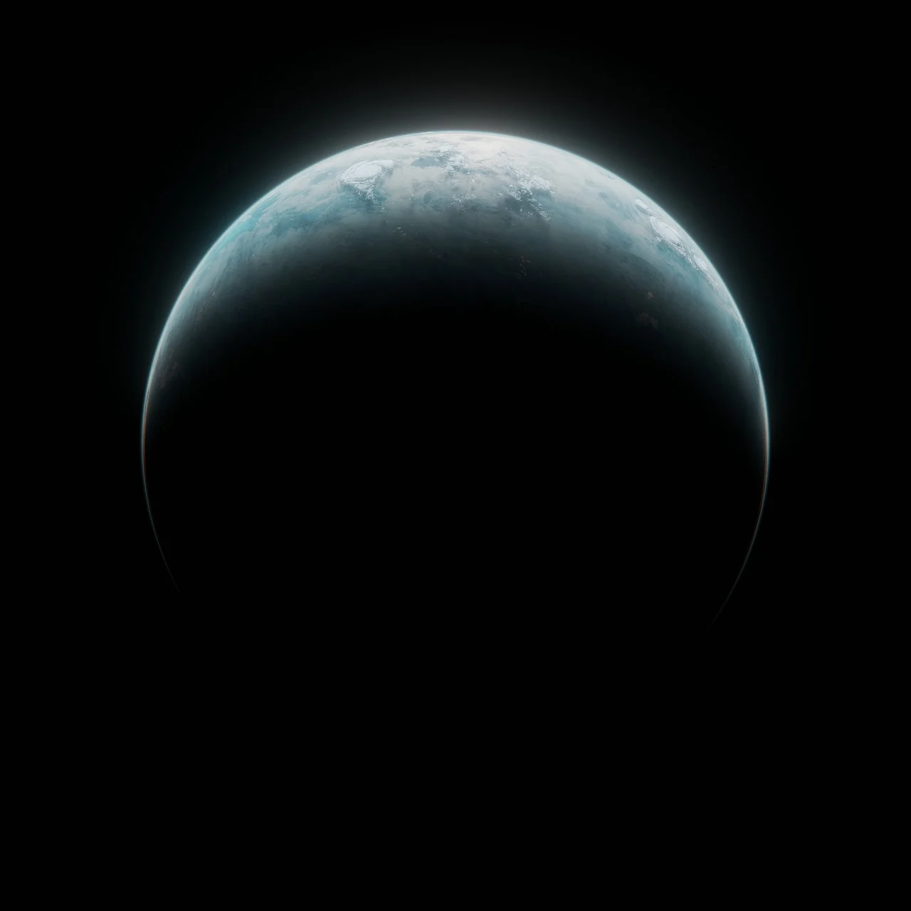

Les secrets de la Galaxie
17 Juillet, 2024
Plongez dans l'exploration des galaxies lointaines et découvrez les mystères fascinants qu'elles renferment. Les galaxies sont des ensembles d'étoiles, de gaz, de poussières et de matière noire gravitant autour d'un centre de masse commun. Elles sont classées en différentes catégories selon leur forme et leur composition.
Les différents types de galaxies
- Galaxies spirales: Les galaxies spirales sont des galaxies plates et en forme de disque, avec des bras spiraux qui s'étendent à partir du centre. La Voie Lactée, notre galaxie, est une galaxie spirale.
- Galaxies elliptiques: Les galaxies elliptiques sont des galaxies en forme de sphère ou d'ellipse, sans structure en spirale.
- Galaxies irrégulières: Les galaxies irrégulières n'ont pas de forme régulière et peuvent être le résultat de collisions entre galaxies.